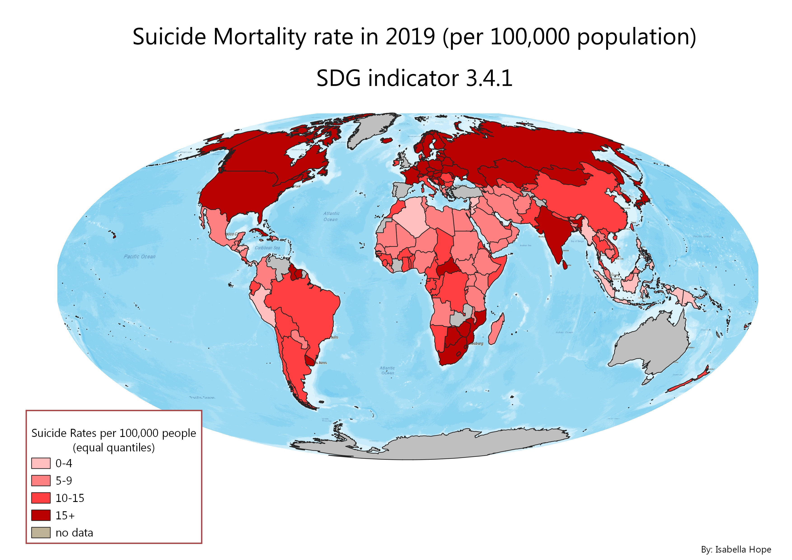

I am just beginning to immerse myself in the GIS world, and have started exploring with map creation and navigation! Below I have shared some of my recent work.
Map 1: Google Earth Engine
This map was made using Google Earth Engine, which is a cloud-based geospatial platform that enables the analysis of vast amounts of satellite imagery and geospatial data for environmental monitoring and research purposes. This specific map zooms in on Southern China. The map aims to show the Carbon Monoxide levels in China during the initial outbreak of the Covid-19 Pandemic. The data reflected is from the first month of the outbreak (December 2019). There are three differnet layers to this map. Layer one is a basic topographical map allowing for localisation. The second layer is an Urban Analysis layer, the band combination used is: B12 (SWIR), B8 (NIR), B3 (Green). This layer shows areas of condensed urban activity compared to areas of high vegetation. The third layer shows Carbon Monoxide levels using remote sensing. Green areas are areas with low Carbon Monoxide levels, while red areas refelct higher recorded levels of Carbon monoxide. The different layers of the map are meant to be navigable and easy to explore allowing for the extraction of useful insights
Map 2: Static SDG Chlorepleth Map

This Map is a Chlorepleth map based on the UN's Sustainable Development Goal, target 3.4.1. SDG 3 aims to ensure healthy lives. Specifically, target 3.4 is as follows "By 2030, reduce by one third premature mortality from non-communicable diseases through prevention and treatment, and promote mental health and well-being." This map highlights one aspect of the target which is reducing suicide rates. The above map is based on Global Suicide data collected in 2019.
Map 3: Mobile App Map: Lunch Spots
This Map is created using the Mobile app I created. The map is centered around Utrecht and specifically Science Park. By using the app people are able to submit information based on thier current location. At any place the app user can choose to'drop a pin' and then answer a series of questions I created. The different questions were designed to answer the ultimate question "Do I want to eat lunch here?". The above points you see are previously logged answers... hopefully this map can be used to locate the best lunch spots (especially for hungry university students)
Scan the above QR code to use my app and add more data points live!
Map 4: Interactive Map
This map is an interactive map based on SDG 3.6. This target aims to "halve the number of global deaths and injuries from road traffic accidents." By clicking on a country you are able to see the road accident incidence based on data collected in 2016.
Written by Isabella Hope.
Contact me at at:
+31 00000000
Box 564, imaginary place
Neverland